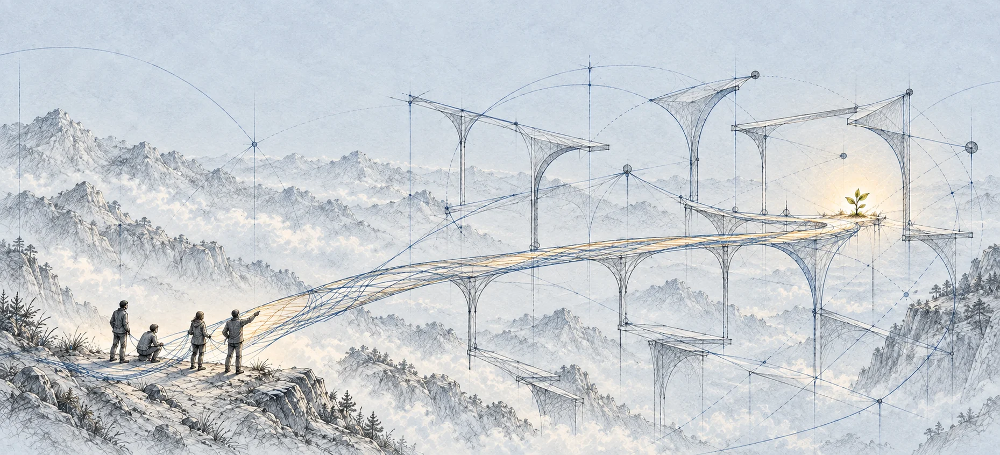
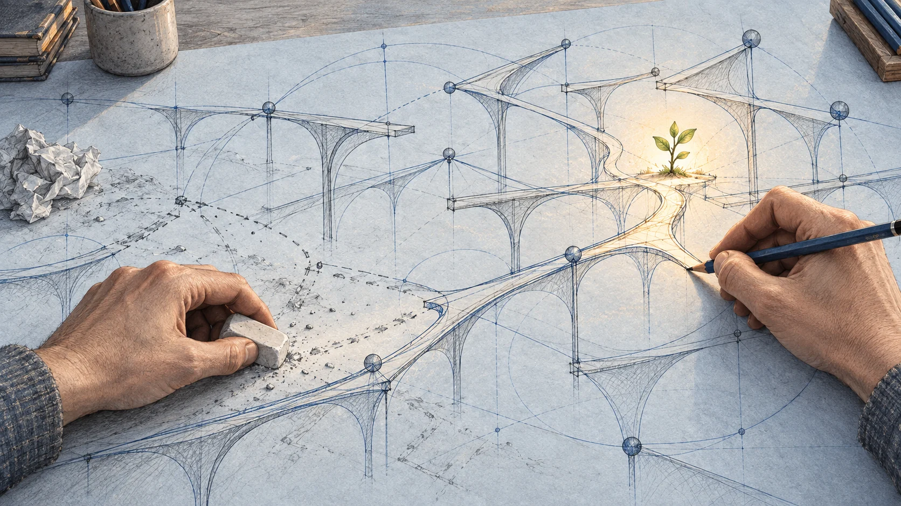

AI Summit PJAIT · 16 września 2026
Co jeszcze pozostało dla człowieka?
Jacek Dukaj, Andrzej Dragan, Bartosz Naskręcki
Prowadzi Dariusz Rosiak

Dariusz Rosiak rozmawia z Jackiem Dukajem, Andrzejem Draganem i Bartoszem Naskręckim o człowieku w świecie AI: od autorstwa i rozumienia po kontrolę, władzę i demokrację.
Najważniejsze wątki
Spór o podmiotowość i kontrolę
Punktem wyjścia jest pytanie, czy opis człowieka jako systemu fizycznego wystarcza do zrozumienia jego odrębności. Dyskusja prowadzi do autorstwa, twórczości i matematyki: kto określa wartość odkrycia i czy człowiek będzie potrafił zrozumieć wyniki rozwijane przez AI?
W rozmowie wraca rozróżnienie między dzisiejszym stanem technologii a przewidywaną trajektorią jej rozwoju. Prognozy dalszych zmian spotykają się z pytaniami o podstawy tych przewidywań. Debata przechodzi od możliwości poznania do koncentracji władzy i sporu o to, jak zmieniać instytucje, nie zakładając, że ktoś potrafi zaprojektować cały system bez błędów.
- Opis człowieka jako systemu fizycznego otwiera spór o to, czy taki język wystarcza do rozumienia podmiotowości i kultury.
- Kontrola i rozumienie to dwie osie dyskusji: czy można skutecznie wpływać na system, nie rozumiejąc go w pełni?
- Odkrycia powstające z udziałem ludzi i AI wywołują pytania o autorstwo, kryteria głębi oraz granice ludzkiego rozumienia.
- Prognoza dalszego przyspieszania zmian zderza się z pytaniem, co pozwala uznać określony kierunek rozwoju za nieunikniony.
- W sporze o demokrację postulat nowych mechanizmów zarządzania spotyka się z argumentem o wartości korekcji błędów i ograniczeniach projektantów.
Czy człowiek jest po prostu systemem?
Pytanie otwierające panel dotyczy człowieka jako systemu matematyczno-fizycznego przetwarzającego informacje, z biologicznym podłożem. Czy taki opis wystarcza, czy pomija coś istotnego w ludzkim doświadczeniu?
Rozmowa rozróżnia podstawowe prawa od narzędzi przydatnych do opisywania bardziej złożonych zjawisk. Możliwość opisu fizycznego nie oznacza jeszcze, że będzie on najwygodniejszym językiem do rozumienia społeczeństwa, kultury albo twórczości.
W transkrypcie · około 01:00 ↗ · Czytaj fragment skryptu ↗ · Obejrzyj ten fragment ↗
Rozumieć czy kontrolować?
Przykłady zjawisk emergentnych prowadzą do tezy, że można opisywać i wykorzystywać działanie systemu bez pełnego rozumienia jego natury. Pada jednak wyraźny kontrargument: celem pracy naukowej może być właśnie rozumienie, a nie kontrola.
Na poziomie społecznym pojawia się przykład modeli statystycznych i big data. Wpływanie na dostatecznie dużą grupę może być skuteczne, nawet jeśli nie wiadomo dokładnie, jak zachowa się każda osoba. Rozmowa przechodzi od opisu człowieka do manipulacji i wolnej woli. W dalszej rozmowie pojawia się też zastrzeżenie o namiastce lub iluzji kontroli.
W transkrypcie · około 08:18 ↗ · Czytaj fragment skryptu ↗ · Obejrzyj ten fragment ↗
Czy odkrycie musi mieć jednego autora?
Przywołana deklaracja dotycząca AI i matematyki staje się punktem wyjścia do dyskusji o autorstwie. Pada prognoza, że w odkryciach tworzonych wspólnie przez ludzi i modele coraz trudniej będzie wskazać wkład jednej osoby.
Ta wątpliwość zostaje rozszerzona na dawną twórczość: także pojedynczy artysta podlega wpływom i procesom, które można próbować odtworzyć. Im dokładniej je poznajemy, tym bardziej problematyczne może stawać się wyodrębnienie całkowicie samodzielnego wkładu.
W transkrypcie · około 13:35 ↗ · Czytaj fragment skryptu ↗ · Obejrzyj ten fragment ↗
Kto określa głębię matematyki?
W cytowanym fragmencie deklaracji pojawia się obawa o autonomię badań: czy tematy będą wybierane ze względu na ich znaczenie, czy przydatność dla zautomatyzowanej matematyki? Dyskusja dotyczy także estetyki i konwencji, dzięki którym społeczność matematyków uznaje pewne wyniki za głębokie.
Pada propozycja uczenia modeli takich ocen na podstawie ludzkich sądów. Spotyka się ona z zastrzeżeniem, że wynik byłby ekstrapolacją z określonej migawki informacji. Za tym sporem stoi pytanie, czy maszyna może rozwijać własną oryginalność, zamiast jedynie odtwarzać dotychczasowe kryteria.
W transkrypcie · około 16:23 ↗ · Czytaj fragment skryptu ↗ · Obejrzyj ten fragment ↗
Szachy, dowody i granice rozumienia
Rozmówcy wracają do dwóch wizji: odkryć, które człowiek może zrozumieć małymi krokami, oraz matematyki rozwijanej przez AI poza zasięgiem ludzkiego pojmowania. Analogia ze szachami prowadzi do prognozy, że dzisiejszy etap współpracy człowieka z silnikiem może nie być etapem końcowym.
Pojawia się jednak istotne zastrzeżenie do tej analogii. W szachach skuteczna strategia daje wygraną; matematyczny wynik może później zostać zastosowany w fizyce lub innych dziedzinach. Pytanie o dowód, którego użytkownik nie rozumie, nie kończy się więc na samym uzyskaniu poprawnego rezultatu.
W transkrypcie · około 23:40 ↗ · Czytaj fragment skryptu ↗ · Obejrzyj ten fragment ↗

Czy człowiek potrzebuje wyznaczonego celu?
Pytanie o optymalizację zmienia skalę rozmowy. Co miałby optymalizować człowiek: przeżycie, szczęście, skuteczność działania? W dyskusji pojawia się także myśl, że przestrzeń dla kultury i nauki powstała wtedy, gdy ludzie mogli zająć się czymś więcej niż bezpośrednim przetrwaniem.
Pojawia się odróżnienie ewolucyjnego opisu gatunku od pytania o jednostkę uznaną za podmiot. Rozmówca podkreśla, że jednostka sama tworzy system wartości i wybiera cele; narzędzie ma cel zadany. Na tym tle pojawia się obawa, że AI mogłaby sprowadzić człowieka do roli narzędzia.
W transkrypcie · około 27:58 ↗ · Czytaj fragment skryptu ↗ · Obejrzyj ten fragment ↗
Dzisiejszy punkt czy przyszła trajektoria?
Argument o dzisiejszej wyjątkowości człowieka spotyka się z uwagą, że opisuje tylko obecny stan technologii. Pada prognoza dalszych, szybkich zmian, ale również pytanie, na jakiej podstawie określony kierunek miałby być nieunikniony. W odpowiedzi pojawia się problem indukcji: dotychczasowy przebieg nie stanowi dowodu przyszłości.
Dyskusja podważa też założenie, że zmiana doprowadzi do jednego stabilnego stanu, w którym ludzie po prostu odnajdą swoją nową rolę. Pada teza o dalszym przyspieszaniu sytuacji, a pytanie o świat idealny zostaje powiązane ze zmiennymi wartościami kultury, czasu i miejsca.
W transkrypcie · około 33:10 ↗ · Czytaj fragment skryptu ↗ · Obejrzyj ten fragment ↗
Władza i ryzyko
Jedną osią sporu jest koncentracja wpływu na informacje i komunikację w rękach niewielkiej grupy osób. Pada argument, że taka koncentracja może zagrażać demokracji. Rozmówcy różnią się jednak w ocenie tego, jak porównywać obecne problemy instytucji z szerszą trajektorią zmian.
Pojawia się również obawa, że decyzje o finansowaniu AI zapadają mimo niepełnego rozumienia jej możliwości. Padają także ostrzeżenia o możliwych scenariuszach katastroficznych. Spór dotyczy zarówno skali ryzyka, jak i sposobu jego rozpoznawania.
W transkrypcie · około 43:10 ↗ · Czytaj fragment skryptu ↗ · Obejrzyj ten fragment ↗
Demokracja: projekt czy korekcja błędów?
Demokracja zostaje przedstawiona jako technologia zarządzania społeczeństwem, której działanie zmienia skala wspólnoty i rola mediów. Pada postulat opracowania mechanizmów odporniejszych na manipulację, z wykorzystaniem dzisiejszej wiedzy o relacjach społecznych.
Odpowiedź akcentuje wartość demokracji jako mechanizmu korekcji błędów: skoro nie umiemy zaprojektować dobrego systemu bez pomyłek, potrzebujemy możliwości jego poprawiania. W zakończeniu wraca przestroga przed przekonaniem, że jeden projektant może zrozumieć całość. Alternatywą w tej wypowiedzi jest budowanie mechanizmów doskonalenia, bez roszczenia do zaprojektowania wszystkiego od początku do końca.
W transkrypcie · około 49:06 ↗ · Czytaj fragment skryptu ↗ · Obejrzyj ten fragment ↗
Cały panel
Transkrypt zachowuje lokalne znaczniki całego nagrania trwającego 54 minuty 55 sekund. Sprawdzono go także z pełną transmisją konferencji, jej napisami i niezależnym rozpoznaniem czystego audio. Jawnie oznaczono nierozstrzygnięte brzmienia oraz pominięcia organizacyjne. Nazwiska wskazują skład panelu z programu; wypowiedzi pozostają bez przypisania do osób tam, gdzie identyfikacja głosu nie była pewna.
Streszczenie redakcyjne na podstawie nagrania. Opinie i przewidywania należą do rozmówców. Panel „Co jeszcze pozostało dla człowieka? Stan gry na 2026”, Jacek Dukaj, Andrzej Dragan, Bartosz Naskręcki; prowadzi Dariusz Rosiak, 16 września 2026. Program konferencji. Ilustracja i prompt.